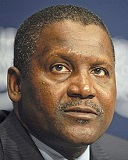

Dangote's Networth rises to $17 Billion

Dangote's Networth rose by 70% after dangote Cement announced full year reports
The company's net income came at nearly 50% of revenue
The close number 2 is also his fellow Nigerian counteroart Mike Adenuga
The Globalcom Chief Executive's networth has risen to $9.2 in the past year